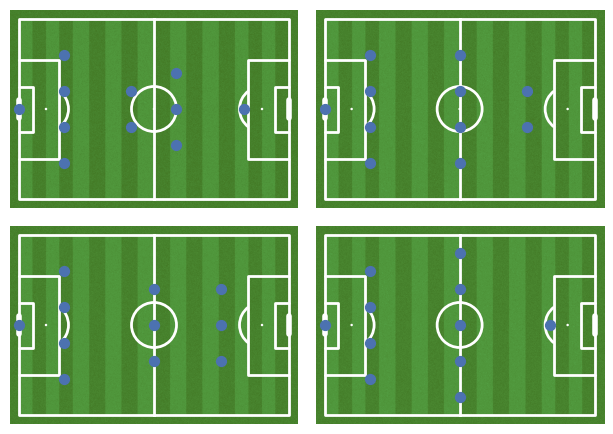

This is the analysis of the football data set from Kaggle. The aims of this project are to explore the data set and eventually gain insights on potential betting strategies by building models that predict match outcomes.
1.1 Imports and Options
1.1.1 Imports
Show the code
%reload_ext autoreload%autoreload 1# Data handlingimport duckdbimport pandas as pdimport numpy as np# Displayfrom IPython.display import Markdown, displayfrom tabulate import tabulate# Plottingimport matplotlib.pyplot as pltimport seaborn as snsfrom mplsoccer import Pitch# Statisticsimport scipy.stats as statsimport statsmodels.api as smfrom sklearn.model_selection import train_test_split from sklearn.metrics import classification_reportfrom sklearn.decomposition import PCAfrom sklearn.preprocessing import StandardScalerfrom sklearn.linear_model import LogisticRegressionfrom sklearn.feature_selection import RFECVfrom sklearn.ensemble import RandomForestClassifierfrom sklearn.metrics import roc_curve, roc_auc_scorefrom lmfit import Minimizer, Parameters# Customimport functions.display_functions as disfimport functions.data_format_functions as dfffrom functions.project_functions_classes import Team, MatchPlayersfrom functions.project_functions_classes import outcome_guess_prob_diffrom functions.project_functions_classes import outcome_guess_prob_winfrom functions.project_functions_classes import classifier_train_prob_winfrom functions.project_functions_classes import classifier_train_prob_dif%aimport functions.display_functions%aimport functions.project_functions_classes%aimport functions.data_format_functions
con = duckdb.connect()con.execute(f"INSTALL sqlite")con.execute(f"LOAD sqlite")con.execute(f"SET GLOBAL sqlite_all_varchar=true")con.execute(f"CALL sqlite_attach('data/database.sqlite')")
<duckdb.DuckDBPyConnection at 0x7f1f96457470>
Fetching table and column names:
Show the code
tables = con.query(f"""--sqlSELECT table_name as 'Table Name', COUNT(column_name) AS 'Column Count'FROM information_schema.columnsGROUP BY table_name""").to_df()table_columns = con.query(f"""--sqlSELECT table_name, GROUP_CONCAT(column_name) AS column_namesFROM information_schema.columnsGROUP BY table_name""").to_df()tables["column_names"] = table_columns["column_names"].apply(lambda x: x.split(","))
Significance:
Show the code
alpha =0.95significance =1- alpha
2 Exploratory data analysis
The goal of this section is to familiarize with the data set. Some statistical inference is presented here, but the feature selection for ML models are presented in a separate section and mostly relies on their predictive power.
2.1 Match
The data set includes data on more than 25 thousand matches. Outcomes, betting odds, players, teams, and their starting lineup positions are given. This section explores match related portion of the data set.
Preparing Match data:
Show the code
match_cols = tables.loc[tables["Table Name"] =="Match", "column_names"].to_list()[0]match_cols_to_remove = ["league_id", "stage", "match_api_id", "cross"]match_cols = [col for col in match_cols if col notin match_cols_to_remove]match_raw = con.query(f"""--sql SELECT {', '.join(match_cols)} FROM Match """).to_df()match_raw.set_index("id", inplace=True)
2.1.1 What in what countries and leagues were the matches played in? By which teams and in which leagues were the most goals scored in?
The Matches were played in 11 different leagues across 11 different European countries. The most goals per match were scored in Netherlands Eredivisie, while the team that scored the most goals per match was FC Barcelona.
2.1.2 Whats the number of matches distribution across the timeline and seasons?
Figure 1: The cumulative sum of total matches played are represented by the blue line, the bars in the background indicate the number of matches played that season and its time span.
Matches are in the data set were played from 2008 to 2016 in 8 seasons.
2.1.3 What is the distribution of goal difference between home and away teams?
Calculating the goal difference for each mach:
Show the code
match_raw[["home_team_goal", "away_team_goal"]] = match_raw[ ["home_team_goal", "away_team_goal"]].astype(int)match_raw["outcome"] = match_raw["home_team_goal"] - match_raw["away_team_goal"]match_outcomes = match_raw["outcome"].value_counts().to_frame("count")match_outcomes.reset_index(names=["value"], inplace=True)match_outcomes["outcome"] = match_outcomes["value"].apply(lambda x: "Home Win"if x >0else ("Home Loss"if x <0else"Tie"))match_outcomes["color"] = match_outcomes["value"].apply(lambda x: sns.color_palette()[0]if x >0else (sns.color_palette()[3] if x <0else sns.color_palette()[4]))
Figure 2: The number of matches that ended with a specific goal difference.
Visual inspection of the match outcome data suggests that there might be a home advantage. Another important observation is that a large portion of matches end in ties.
2.1.4 Is there a home advantage?
Chi square test of non-tie matches with the null hypothesis being that there is an equal amount of home wins and away wins:
Markdown(f"""Based on a chi-square test with a confidence level of 95%, the p-value of {home_advantage_result.pvalue:.2e}strongly suggests that there is a significant home advantage.{total_home_wins} of all non-tie wins were by the home team,while only {total_away_wins} matches were won by away teams.""")
Based on a chi-square test with a confidence level of 95%, the p-value of 2.82e-224 strongly suggests that there is a significant home advantage. 11917 of all non-tie wins were by the home team, while only 7466 matches were won by away teams.
2.1.5 What are the different player combinations used?
The data set includes starting lineup positions on the field.
Preparing player position combination columns:
Show the code
# Getting lists of position column nameshome_x_cols = [x for x in match_raw.columns.to_list() if"home_player_X"in x]home_y_cols = [x for x in match_raw.columns.to_list() if"home_player_Y"in x]away_x_cols = [x for x in match_raw.columns.to_list() if"away_player_X"in x]away_y_cols = [x for x in match_raw.columns.to_list() if"away_player_Y"in x]# Changing the data type to numericmatch_raw[home_x_cols + home_y_cols + away_x_cols + away_y_cols] = match_raw[ home_x_cols + home_y_cols + away_x_cols + away_y_cols].apply(pd.to_numeric)# Putting the home player coordinates into frozensets of (x,y) tuplesmatch_raw["combinations_home"] = match_raw.apply(lambda row: frozenset([(x, y) for x, y inzip(row[home_x_cols], row[home_y_cols])]), axis=1,)# Changing any values that contain at least a single NaN value to Nanmatch_raw["combinations_home"] = match_raw["combinations_home"].apply(lambda x: np.nan ifany(np.isnan(y) for tup in x for y in tup) else x)# Removing frozensets with less than 11 player coordinatesmatch_raw["combinations_home"] = match_raw["combinations_home"].apply(lambda x: x iftype(x) ==frozensetandlen(x) ==11else np.nan)# Putting the away player coordinates into frozensets of (x,y) tuplesmatch_raw["combinations_away"] = match_raw.apply(lambda row: frozenset([(x, y) for x, y inzip(row[away_x_cols], row[away_y_cols])]), axis=1,)# Removing frozensets with less than 11 player coordinatesmatch_raw["combinations_away"] = match_raw["combinations_away"].apply(lambda x: np.nan ifany(np.isnan(y) for tup in x for y in tup) else x)# Putting the away player coordinates into frozensets of (x,y) tuplesmatch_raw["combinations_away"] = match_raw["combinations_away"].apply(lambda x: x iftype(x) ==frozensetandlen(x) ==11else np.nan)
# Correcting the position of the goal keeperunique_combos["scaled_combo"] = unique_combos["combo"].apply(lambda x: frozenset((5, 1) if t == (1, 1) else t for t in x))# Scaling to the pitch plotpitch_y_offset =4- dff.scale_num(1, 1, 11, -4, 80)unique_combos["scaled_combo"] = unique_combos["scaled_combo"].apply(lambda x: frozenset( ( dff.scale_num(t[0], 1, 11, 0, 80) + pitch_y_offset, dff.scale_num(t[1], 1, 11, 0, 100), )for t in x ))pitch = Pitch( pitch_color="grass", line_color="white", stripe=True,)fig_pitch, ax_pitch = pitch.draw( nrows=2, ncols=2, figsize=(base_fig_width, base_fig_height))ax_pitch = ax_pitch.flatten()for i, combo inenumerate(unique_combos[:4].iterrows()):for pos in combo[1]["scaled_combo"]: ax_pitch[i].scatter( pos[1], pos[0], s=50, color=sns.color_palette("deep")[0], )plt.tight_layout(w_pad=-6)plt.show()

Figure 3: The four most popular starting lineup position combinations.
2.2 Player attributes
The dataset included a variety of numerical and categorical player attributes, this section presents this portion of the data.
2.2.1 What is the player rating and potential distribution?
Show the code
# Fetching player attributes with the latest date.rating_potential = con.query("""--sqlSELECT overall_rating, potentialFROM Player_Attributes p JOIN( SELECT player_api_id, MAX(date) AS max_date FROM Player_attributes GROUP BY player_api_id ) sub ON p.player_api_id = sub.player_api_id AND p.date = sub.max_date """).to_df()rating_potential.dropna(inplace=True)rating_potential = rating_potential.astype(int)# Plotfig_player_rating_hist, ( ax_player_rating_hist, ax_player_potential_hist,) = plt.subplots(1, 2, figsize=(base_fig_width, base_fig_height))rating_potential.hist("potential", ax=ax_player_potential_hist)rating_potential.hist("overall_rating", ax=ax_player_rating_hist)disf.axis_titles(ax_player_potential_hist, xtitle="Player Potential", ytitle="Count")disf.axis_titles(ax_player_rating_hist, xtitle="Player Overall Rating", ytitle="Count")plt.show()
Figure 4: The distribution of player overall rating and potential. The latest stats of each player is included in this figure.
2.2.2 Whats is the foot preference distribution?
Show the code
con.query(f"""--sqlSELECT COUNT(*) AS total, SUM(CASE WHEN preferred_foot = 'right' THEN 1 ELSE 0 END) AS right_count, SUM(CASE WHEN preferred_foot = 'left' THEN 1 ELSE 0 END) AS left_countFROM Player_Attributes p JOIN( SELECT player_api_id, MAX(date) AS max_date FROM Player_attributes GROUP BY player_api_id ) sub ON p.player_api_id = sub.player_api_id AND p.date = sub.max_date""").to_df().astype(int).rename( columns={"total": "Total","right_count": "Right footed players","left_count": "Left footed players", })
Total
Right footed players
Left footed players
0
11064
8373
2687
2.2.3 Do right and left footed players have a different overall rating?
Fetching the data:
Show the code
player_f_rating = con.query(f"""--sqlSELECT CAST(overall_rating as INT) AS 'Overall Rating', preferred_footFROM Player_Attributes p JOIN( SELECT player_api_id, MAX(date) AS max_date FROM Player_attributes GROUP BY player_api_id ) sub ON p.player_api_id = sub.player_api_id AND p.date = sub.max_date""").to_df()
T-test:
Show the code
player_f_rating_levresults = stats.levene( player_f_rating.loc[player_f_rating["preferred_foot"] =="right", "Overall Rating"], player_f_rating.loc[player_f_rating["preferred_foot"] =="left", "Overall Rating"],)player_f_rating_tresults = stats.ttest_ind( player_f_rating.loc[player_f_rating["preferred_foot"] =="right", "Overall Rating"], player_f_rating.loc[player_f_rating["preferred_foot"] =="left", "Overall Rating"], equal_var=player_f_rating_levresults.pvalue > significance,)Markdown(f"""t-statistic: {round(player_f_rating_tresults.statistic,2)}<br> p-val: {round(player_f_rating_tresults.pvalue,2)}<br> There {'is a'if player_f_rating_tresults.pvalue < significance else'is no'} significant difference in overall rating between right and left footed players """)
t-statistic: -0.54 p-val: 0.59 There is no significant difference in overall rating between right and left footed players
2.2.4 What is the distribution of goal keeper attributes?
Getting the histogram data for goal keeper diving ability:
Show the code
goaly_hist_df = ( con.query(f"""--sqlWITH bin_stats AS ( SELECT ( ( MAX(CAST(gk_diving AS INT)) - MIN(CAST(gk_diving AS INT)) ) / 10 ) AS bin_size FROM Player_Attributes p JOIN( SELECT player_api_id, MAX(date) AS max_date FROM Player_attributes GROUP BY player_api_id ) sub ON p.player_api_id = sub.player_api_id AND p.date = sub.max_date)SELECT FLOOR( CAST(gk_diving AS INT) / ( SELECT bin_size FROM bin_stats ) ) * ( SELECT bin_size FROM bin_stats ) AS bin, COUNT(*) AS countFROM Player_Attributes p JOIN( SELECT player_api_id, MAX(date) AS max_date FROM Player_attributes GROUP BY player_api_id ) sub ON p.player_api_id = sub.player_api_id AND p.date = sub.max_dateGROUP BY binORDER BY bin; """ ) .to_df() .astype(int, errors="ignore"))
Table 1: Pearsons r of overall rating versus other player attributes calculated for all players and goalkeepers separately. The goalkeepers here are defined as having goal keeper diving attribute higher than 50.
overall_rating
overall_rating_goal_keeper
overall_rating
1.00
1.00
potential
0.77
0.80
crossing
0.36
-0.03
finishing
0.33
-0.03
heading_accuracy
0.31
-0.04
short_passing
0.46
0.12
volleys
0.36
-0.01
dribbling
0.35
-0.03
curve
0.36
-0.03
free_kick_accuracy
0.35
0.01
long_passing
0.44
0.13
ball_control
0.44
0.13
acceleration
0.25
0.21
sprint_speed
0.25
0.23
agility
0.24
0.20
reactions
0.77
0.66
balance
0.16
0.07
shot_power
0.43
0.08
jumping
0.26
0.40
stamina
0.33
0.09
strength
0.32
0.28
long_shots
0.39
-0.03
aggression
0.32
0.20
interceptions
0.25
0.10
positioning
0.37
0.03
vision
0.43
0.20
penalties
0.39
0.15
marking
0.13
-0.05
standing_tackle
0.17
-0.04
sliding_tackle
0.13
-0.03
gk_diving
0.03
0.91
gk_handling
0.00
0.89
gk_kicking
0.03
0.70
gk_positioning
0.01
0.90
gk_reflexes
0.01
0.91
As seen in table Table 1, For all players there are moderate linear correlations between player overall ratings and all attributes except those related to goal keeping. It is the opposite for dedicated goalkeepers.
2.2.6 Whats the distribution of attacking and defensive work?
Fetching the data:
Show the code
att_def_df = con.query(f"""--sqlSELECT attacking_work_rate, defensive_work_rateFROM Player_Attributes p JOIN( SELECT player_api_id, MAX(date) AS max_date FROM Player_attributes GROUP BY player_api_id ) sub ON p.player_api_id = sub.player_api_id AND p.date = sub.max_date""").to_df()
Figure 7: Histograms of numeric team attributes. Categories for the same characteristics are also given in the data set, therefore the histograms are split according to those categories.
Figure 8: The distribution of categorical attributes amongst teams.
Team attributes that can be described numerically are given in both numeric and three-category formats as can be seen in Figure 7. Three boolean attributes were also given as seen in Figure 8.
2.3.2 Do the numeric team attributes correlate linearly with each other?
Certain defensive attributes seem to have a moderate linear correlation with each other, as well as build up play speed and chance creation passing attributes.
3 Feature selection
This section delves into the feature selection process for the final logistic regression model, aimed at predicting whether the home team wins the match. The primary focus of the model lies in achieving high predictive power. As a result, the feature selection heavily relies on the predictive capabilities of different feature sets.
3.1 Starting line-up combinations
Making a copy the match DataFrame with only relevant information:
3.1.1 Do combinations influence the match outcome?
Adding the combination data:
Show the code
# Number labels for unique combinationscombo_dict = unique_combos["combo"].to_dict()combo_dict = {v: k for k, v in combo_dict.items()}# Adding the combinations from the raw datamatch_win_df_combo = pd.merge( match_win_df, match_raw[["combinations_home", "combinations_away"]], left_index=True, right_index=True,)# Changing the combinations into a single number labelmatch_win_df_combo[["combinations_home", "combinations_away"]] = match_win_df_combo[ ["combinations_home", "combinations_away"]].replace(combo_dict)# Making a column with the home away combination pairsmatch_win_df_combo["combo_home_away"] = match_win_df_combo.apply(lambda x: (x["combinations_home"], x["combinations_away"]), axis=1)match_win_df_combo["combo_home_away"] = match_win_df_combo["combo_home_away"].apply(lambda x: np.nan if np.isnan(x).any() else x)
Chi-squared test with the null hypothesis that home team combination (top 5 combinations only) is not associated to home the home team winning:
Show the code
comb_h_home_w_con_tab = pd.crosstab( match_win_df_combo.loc[ match_win_df_combo["combinations_home"] <=5, "home_team_win" ], match_win_df_combo.loc[ match_win_df_combo["combinations_home"] <=5, "combinations_home" ],)comb_h_home_w_results = stats.chi2_contingency(comb_h_home_w_con_tab)Markdown(f"""Chi-squared statistic: {round(comb_h_home_w_results.statistic,1)}<br> p-value: {comb_h_home_w_results.pvalue:.2e}<br> The home team combination {'is'if comb_h_home_w_results.pvalue<significance else'is not'} significantly associated with the home team winning. """)
Chi-squared statistic: 50.8 p-value: 9.40e-10 The home team combination is significantly associated with the home team winning.
Chi-squared test with the null hypothesis that away team combination (top 5 combinations only) is not associated to home the home team winning:
Show the code
comb_a_home_w_con_tab = pd.crosstab( match_win_df_combo.loc[ match_win_df_combo["combinations_away"] <=5, "home_team_win" ], match_win_df_combo.loc[ match_win_df_combo["combinations_away"] <=5, "combinations_away" ],)comb_a_home_w_results = stats.chi2_contingency(comb_a_home_w_con_tab)Markdown(f"""Chi-squared statistic: {round(comb_a_home_w_results.statistic,1)}<br> p-value: {comb_a_home_w_results.pvalue:.2e}<br> The home team combination {'is'if comb_a_home_w_results.pvalue < significance else'is not'} significantly associated with the home team winning. """)
Chi-squared statistic: 27.1 p-value: 5.55e-05 The home team combination is significantly associated with the home team winning.
Chi-squared test with the null hypothesis that home-away team combination pair is not associated to home the home team winning:
Show the code
comb_ha_home_w_con_tab = pd.crosstab( match_win_df_combo["combo_home_away"].apply(str), match_win_df_combo["home_team_win"],)comb_ha_home_w_results = stats.chi2_contingency(comb_ha_home_w_con_tab)Markdown(f"""Chi-squared statistic: {round(comb_ha_home_w_results.statistic,1)}<br> p-value: {comb_ha_home_w_results.pvalue:.2e}<br> The home-away team combination pair {'is'if comb_ha_home_w_results.pvalue<significance else'is not'} significantly associated with the home team winning. """)
Chi-squared statistic: 756.2 p-value: 3.67e-05 The home-away team combination pair is significantly associated with the home team winning.
Figure 9: Heatmap of six most popular home team starting lineup combinations versus match outcome.
From the statistical analysis we can say that the starting lineup combinations do influence the match outcome. An example of this is illustrated in Figure 9, where it can be seen that certain combinations such as combination 2 have a higher win percentage than others such as combination 5.
3.1.2 Can the combinations be used to predict match outcome?
Due to the categoric nature of the combination data and the number of different categories the random forest model was chosen to test the predictive power of this feature set. The Model is built by using both home team and away team starting lineup combinations.
Building the random forest model and making predictions:
Show the code
match_win_df_combo.dropna(inplace=True)home_win_target = match_win_df_combo["home_team_win"]home_win_team_features = match_win_df_combo[["combinations_home", "combinations_away"]]# Splitting the data into training and test setsX_train, X_test, y_train, y_test = train_test_split( home_win_team_features, home_win_target, test_size=0.33, random_state=1)# Create and fit the logistic regression modellogit_model = RandomForestClassifier()result = logit_model.fit(X_train, y_train)# Predict using the trained modelpredictions = result.predict(X_test)
Figure 10: Receiver operating characteristic curve of the home-win predictions made by the random forest model trained on team starting lineup combinations.
The random forest model based on the home team and away team starting line-up combinations predicted the game outcome with 54% accuracy. This value does not be the underlying outcome data skew and barely beats random guessing as seen from the ROC curve (Figure 10) therefore these features are not included in the final model.
3.2 Team Attributes
3.2.1 Preparing the features
In the dataset, team attributes have undergone multiple updates over time, likely derived from the respective teams performances in various matches, possibly even including the matches contained within this dataset. Consequently, we must exercise caution not to incorporate attributes updated after each match occurrence, as doing so could introduce match outcome leakage into our feature set, which can significantly bias the model and compromise its ability to generalize to new, unseen data. To ensure the integrity and validity of our predictive model, we must strictly adhere to using only those team attributes that were available up until the time of each match without incorporating any post-match updates.
unique_team_ids = [ i[0]for i in con.query("""--sqlSELECT DISTINCT team_api_idFROM Team_attributes""" ).fetchall()]teams = {}for team in unique_team_ids: teams[team] = Team(team) teams[team].get_data(team_attr_raw)
Removing matches with teams that have no attributes:
Show the code
match_win_df_team = match_win_df[ match_win_df.index.isin(match_win_df_combo.index)] # not using rows with missing combination datamatch_win_df_team = match_win_df[~match_win_df["away_team_api_id"].isin(set(unique_team_ids).symmetric_difference( match_win_df["away_team_api_id"].unique() ) )]match_win_df_team = match_win_df_team[~match_win_df_team["home_team_api_id"].isin(set(unique_team_ids).symmetric_difference( match_win_df_team["home_team_api_id"].unique() ) )]
Getting the latest team attributes by match date using the Team class:
Show the code
team_attributes_home = {}for index in match_win_df_team.index: team_attributes_home[index] = teams[ match_win_df_team.at[index, "home_team_api_id"] ].get_latest_entry(match_win_df_team.loc[index, "date"], team_numeric_cols)team_attributes_away = {}for index in match_win_df_team.index: team_attributes_away[index] = teams[ match_win_df_team.at[index, "away_team_api_id"] ].get_latest_entry(match_win_df_team.loc[index, "date"], team_numeric_cols)match_win_df_team = match_win_df_team.join( pd.concat(list(team_attributes_home.values()), keys=team_attributes_home.keys() ).droplevel(1), rsuffix="_home",)match_win_df_team = match_win_df_team.join( pd.concat(list(team_attributes_away.values()), keys=team_attributes_away.keys() ).droplevel(1), rsuffix="_away",)
Dropping matches where teams do not have date relevant attributes:
Show the code
match_win_df_team.dropna(inplace=True)
Number of matches left:
Show the code
len(match_win_df_team)
5562
Lineup combination summary
A custom class object called Team has been developed, wherein a new instance of the Team class is created for each team in the dataset. This class effectively stores all attribute entries associated with a specific team. Additionally, the class includes a method that, given a specific date and a list of columns, enables retrieval of the latest features that were entered before the specified date.
Using this Team class, relevant date-specific attributes for both the home and away teams were incorporated for each match in the dataset. However, Only five and a half thousand matches out of the total dataset had date-relevant team attributes.
3.2.2 Logistic regression with all home and away team attributes
Model training and prediction:
Show the code
cols_to_drop = ["date","country_id","home_team_api_id","away_team_api_id","home_team_goal","away_team_goal","home_team_win",]home_win_target_team = match_win_df_team["home_team_win"]home_win_team_features = match_win_df_team.drop(columns=cols_to_drop)# Splitting the data into training and test setsX_train, X_test, y_train, y_test = train_test_split( home_win_team_features, home_win_target_team, test_size=0.33, random_state=1)# Scaling the datateam_feat_scaler = StandardScaler()X_train = team_feat_scaler.fit_transform(X_train)X_test = team_feat_scaler.fit_transform(X_test)# Create and fit the logistic regression modellogit_model_team_raw = sm.Logit(y_train, sm.add_constant(X_train))result_team_raw = logit_model_team_raw.fit()# Predict using the trained modelpredictions_team_raw = result_team_raw.predict(sm.add_constant(X_test))
Figure 11: Receiver operating characteristic curve of the home-win predictions made by a logistic regression model trained on all unmodified team attributes.
Table 2: Logistic regression model coefficients obtained by fitting the model using all team attributes without modification.
Coefficient
p-value
chanceCreationCrossing
0.152056
0.000039
defencePressure
0.144163
0.000423
defenceAggression
0.108681
0.005694
buildUpPlayPassing_away
0.102034
0.005645
chanceCreationShooting
0.058222
0.103961
chanceCreationPassing
0.054869
0.148477
chanceCreationPassing_away
0.036955
0.326063
buildUpPlaySpeed_away
0.000000
nan
buildUpPlayDribbling
-0.009078
0.805382
buildUpPlayDribbling_away
-0.010104
0.781839
defenceTeamWidth_away
-0.032326
0.372644
chanceCreationShooting_away
-0.044350
0.213259
chanceCreationCrossing_away
-0.067888
0.064786
defencePressure_away
-0.067918
0.088940
defenceTeamWidth
-0.073841
0.042846
buildUpPlaySpeed
-0.075674
0.044537
defenceAggression_away
-0.116909
0.002445
buildUpPlayPassing
-0.119629
0.001813
Team unmodified attribute summary
The logistic regression model, utilizing 18 team attributes, achieved a 58% accuracy in predicting game outcomes, slightly surpassing the datasets natural skew. This observation is further supported by the ROC curve, which yielded an area under the curve (AUC) of 0.56. Since we are specifically interested in predicting home winning matches, the models precision for home wins was 0.55, while the recall was only 0.33. This outcome is favorable for betting strategies, as we prioritize precise positive predictions and have the option not to place a bet.
The significance analysis of the logistic regression model revealed that the top 4 largest coefficients and the lowest coefficients were deemed statistically significant, while those coefficients falling in between were considered insignificant.
Despite these results, the models performance-to-feature ratio is not satisfactory. To address this, we will focus on reducing the number of features by utilizing the differences of these attributes between home and away teams.
3.2.4 Logistic regression with home-away team attribute differences
Training the model and predictions:
Show the code
home_win_team_features_dif = match_win_df_team.drop(columns=cols_to_drop)home_win_team_features_dif = ( home_win_team_features_dif[team_numeric_cols].values- home_win_team_features_dif[[col +"_away"for col in team_numeric_cols]].values)team_feat_names = [i +"_diff"for i in team_numeric_cols]home_win_team_features_dif = pd.DataFrame( home_win_team_features_dif, columns=team_feat_names, index=home_win_target_team.index,)# Split the data into training and test setsX_train, X_test, y_train, y_test = train_test_split( home_win_team_features_dif, home_win_target_team, test_size=0.33, random_state=1)# Scale the datateam_feat_ratio_scaler = StandardScaler()X_train = team_feat_ratio_scaler.fit_transform(X_train)X_test = team_feat_ratio_scaler.fit_transform(X_test)# Create and fit the logistic regression modellogit_model_team_dif = sm.Logit(y_train, sm.add_constant(X_train))result_team_dif = logit_model_team_dif.fit()# Predict using the trained modelpredictions_team_dif = result_team_dif.predict(sm.add_constant(X_test))
Optimization terminated successfully.
Current function value: 0.672126
Iterations 4
Table 3: Logistic regression model coefficients obtained by fitting the model using the differences of team attributes.
Coefficient
p-value
chanceCreationCrossing_diff
0.153614
0.000030
defenceAggression_diff
0.152408
0.000104
defencePressure_diff
0.149047
0.000379
chanceCreationShooting_diff
0.068049
0.052230
chanceCreationPassing_diff
0.011143
0.766147
buildUpPlayDribbling_diff
0.003255
0.925469
defenceTeamWidth_diff
-0.027599
0.448482
buildUpPlaySpeed_diff
-0.052334
0.159906
buildUpPlayPassing_diff
-0.155055
0.000062
Reducing the number of features in half by calculating the difference between home and away teams did not compromise the predictive power of the model. Furthermore only four features were determined to be significant, as expected most of these were positive (diiferences in chance creation crossing, defence aggression, and defence pressiure), yet one negative feature build up play passing was also significant.
Building a model with only significant features:
Show the code
# Selecting significant features based on previous modelsignificant_team_features = params_team_all.loc[ params_team_all["p-value"] < significance].index.to_list()# Split the data into training and test setsX_train, X_test, y_train, y_test = train_test_split( home_win_team_features_dif[significant_team_features], home_win_target_team, test_size=0.33, random_state=1,)# Scale the datateam_feat_ratio_scaler = StandardScaler()X_train = team_feat_ratio_scaler.fit_transform(X_train)X_test = team_feat_ratio_scaler.fit_transform(X_test)# Create and fit the logistic regression modellogit_model_team_dif = sm.Logit(y_train, sm.add_constant(X_train))result_team_dif = logit_model_team_dif.fit()# Predict using the trained modelpredictions_team_dif = result_team_dif.predict(sm.add_constant(X_test))
Optimization terminated successfully.
Current function value: 0.672929
Iterations 4
Figure 12: Receiver operating characteristic curve of the home-win predictions made by a logistic regression model trained on significant team attribute differences.
3.2.5 Team attribute summary
By calculating the differences in team attributes and subsequently selecting only the significant differences, the models performance was not compromised. On the contrary, it even exhibited an increase of one percentage point in accuracy and precision when predicting home team winning matches. As a result, these four significant team attribute differences will be retained and utilized in the final model.
3.3 Player Attributes
To avoid outcome data leakage and address the dynamic nature of player attributes and team composition, a custom class called MatchPlayers was implemented. This class includes a subclass named Player and incorporates several methods to handle the data preparation challenges effectively.
Since player attributes may undergo updates over time, it is essential to ensure that the model does not have access to future information when making predictions. To achieve this, the MatchPlayers class ensures that player attribute data is appropriately partitioned and processed, preventing any leakage of information from future matches.
Additionally, teams consist of 11 different players, and their compositions can change over time. Managing these variations is vital for accurate predictions. The class efficiently handles team composition changes, allowing for proper data alignment and processing during model training and evaluation.
Furthermore, the inclusion of goalkeepers presents an additional complexity, as they possess a distinct set of attributes compared to other players as was shown in Table 1. The MatchPlayers class addresses this issue by appropriately differentiating and handling goalkeeper attributes to ensure their relevance in the model without compromising overall data integrity.
Moreover, the MatchPlayers class also includes functions to export different sets of features, as well as their transformed variants, allowing for flexible feature selection and manipulation during the model building process. This feature further enhances the adaptability and utility of the custom class in preparing the data for predictive modeling.
Getting the date relevant attributes of each match player using the MatchPlayers class Player subclass and their functions:
10+ min processing time warning!
Show the code
# # only using rows with team attributes# match_win_df_player = match_win_df.copy()[# match_win_df.index.isin(match_win_df_team.index)# ]# # Creating MatchPlayers objects for each match# match_players_series = {}# for i in match_win_df_player.index:# match_players_series[i] = MatchPlayers()# match_players_series = pd.Series(match_players_series, name="match_players")# match_win_df_player = match_win_df_player.join(match_players_series)# # Using the MatchPlayers methods and the player subclass and it's methods to store date# # player attribute data for each match# for index, row in match_raw[match_raw.index.isin(match_win_df_player.index)].iterrows():# match_win_df_player.at[index, "match_players"].get_data(row)# match_win_df_player.at[index, "match_players"].get_player_positions()# match_win_df_player.at[index, "match_players"].get_player_ids()# match_win_df_player.at[index, "match_players"].home_players[# "goaly"# ].get_player_attributes(player_attr_raw, row["date"])# match_win_df_player.at[index, "match_players"].away_players[# "goaly"# ].get_player_attributes(player_attr_raw, row["date"])# for player in match_win_df_player.at[index, "match_players"].home_players[# "players"# ]:# player.get_player_attributes(player_attr_raw, row["date"])# for player in match_win_df_player.at[index, "match_players"].away_players[# "players"# ]:# player.get_player_attributes(player_attr_raw, row["date"])
Optional code for saving and loading sorted match data for further use:
Show the code
import pickle# with open('match_win_df_player.pkl', 'wb') as file:# pickle.dump(match_win_df_player, file)withopen("match_win_df_player.pkl", "rb") asfile: match_win_df_player = pickle.load(file)
By employing the custom class MatchPlayers with its Player subclass and various methods, the data preparation challenges related to player attributes, team compositions, and goalkeeper attributes were effectively overcome, providing a robust foundation for building an accurate predictive model.
3.3.1 Logistic regression using all attributes
Due to the large number of different players and their attributes in a single match, the resulting feature set from the MatchPlayers class can consist of up to 770 different features. However, with only around five thousand samples available, this leads to an unbalanced feature-to-sample ratio in our training set, necessitating feature reduction.
In the first iteration of the model, all possible player attributes without any modifications were utilized. These attributes were then used to train a logistic regression model to predict whether the home team wins the match. To mitigate potential overfitting and reduce the inclusion of less important features, the fitting function employed regularization with an alpha value of 0.1.
Exporting all player attributes:
Show the code
# Export all player attributes for each mach in to a dictionaryplayer_att_dict = {}for i in match_win_df_player.index: player_att_dict[i] = match_win_df_player.at[ i, "match_players" ].export_player_attributes(player_attr_numeric, how="all")# Merging with the match dataframematch_win_players = pd.DataFrame.from_dict(player_att_dict, orient="index").join( match_win_df["home_team_win"])# Dropping rows with missing valuesmatch_win_players.dropna(inplace=True)# In some cases missing attributes were returned as empty dictionaries, dropping these rowsmatch_win_players = match_win_players[ match_win_players.apply(lambda x: Falseifdictin [type(i) for i in x.values] elseTrue, axis=1 )]
Logistic Regression with all player attributes:
Show the code
home_win_target_player = match_win_players["home_team_win"]home_win_features_player = match_win_players.drop(columns="home_team_win")# Splitting the data into training and test setsX_train, X_test, y_train, y_test = train_test_split( home_win_features_player, home_win_target_player, test_size=0.33, random_state=1)# Scaling the dataplayer_feat_scaler = StandardScaler()X_train = player_feat_scaler.fit_transform(X_train)X_test = player_feat_scaler.fit_transform(X_test)# Create and fit the logistic regression modellogit_model_player_all = sm.Logit(y_train, sm.add_constant(X_train))result_player_all = logit_model_player_all.fit_regularized( method="l1_cvxopt_cp", alpha=0.1, disp=0)# Predict using the trained modelpredictions_player_all = result_player_all.predict(sm.add_constant(X_test))
The model utilizing all player attributes achieved a similar accuracy of 58% compared to the one trained on team attributes, but it involved the use of a substantially higher number of features (770 attributes). Furthermore, this model exhibited a higher recall, which compromises potential profits from betting due to increased false positives.
Given the large number of features relative to the limited number of samples, even when employing lasso regression to penalize large coefficients, some coefficients with significant magnitudes had p-values above the significance level. As a result, it becomes evident that to enhance the models predictive power and simplicity, it is necessary to reduce the number of features.
3.3.2 Logistic regression using the differences of player attributes:
The most straightforward approach to feature reduction is employed here by utilizing the differences in attributes between home and away players instead of considering attributes from all players individually. By adopting this method, the number of features is effectively reduced by half.
To address the challenge of distinguishing the importance of players in specific positions, a more generalized approach is implemented. Instead of using separate attribute differences for each player, the average of all non-goalkeeper players attributes is utilized. This further reduces the number of features significantly, resulting in a final set of 70 features from the initial 770.
This reduction in the number of features streamlines the model, making it more interpretable and computationally efficient while retaining relevant information for predicting home team wins in football matches.
Fetching relevant differences of player attributes:
Show the code
player_att_dict = {}for i in match_win_df_player.index: player_att_dict[i] = match_win_df_player.at[ i, "match_players" ].export_player_attributes(player_attr_numeric, how="avg_diff")match_win_players = pd.DataFrame.from_dict(player_att_dict, orient="index").join( match_win_df["home_team_win"])# Dropping rows with missing valuesmatch_win_players.dropna(inplace=True)# In some cases missing attributes were returned as empty dictionaries, dropping these rowsmatch_win_players = match_win_players[ match_win_players.apply(lambda x: Falseifdictin [type(i) for i in x.values] elseTrue, axis=1 )]
Logistic regression model training and predictions:
Show the code
home_win_target_playerdif = match_win_players["home_team_win"]home_win_features_playerdif = match_win_players.drop(columns="home_team_win")# Splitting the data into training and test setsX_train, X_test, y_train, y_test = train_test_split( home_win_features_playerdif, home_win_target_playerdif, test_size=0.33, random_state=1,)# Scaling the dataplayer_feat_scaler = StandardScaler()X_train = player_feat_scaler.fit_transform(X_train)X_test = player_feat_scaler.fit_transform(X_test)# Create and fit the logistic regression modellogit_model_player_dif = sm.Logit(y_train, sm.add_constant(X_train))result_player_dif = logit_model_player_dif.fit_regularized( method="l1_cvxopt_cp", alpha=0.1, disp=0)# Predict using the trained modelpredictions_player_dif = result_player_dif.predict(sm.add_constant(X_test))
The reduction in the number of features, achieved by calculating the average differences of player attributes, has significantly improved the predictive power of the model. The model now exhibits an overall accuracy of 65%, an area under the receiver operating characteristic curve (AUC-ROC) of 0.64, and precision and recall values of 0.62 and 0.53, respectively, when predicting home team wins.
Despite this success, it is important to note that not all of the largest coefficients in the model are statistically significant. This indicates a level of uncertainty in their determination and suggests that there is room for further improvement in the model.
3.3.3 Recursive feature elimination
To further improve the model and address the challenge of reducing the number of features, we will employ Recursive Feature Elimination (RFE) with cross-validation.
RFE with cross-validation allows us to identify the most relevant features that contribute significantly to the models predictive performance. By iteratively removing less informative features, we can achieve a more efficient and interpretable model without sacrificing accuracy or precision.
Show the code
# Splitting the data into training and test setsX_train, X_test, y_train, y_test = train_test_split( home_win_features_playerdif, home_win_target_playerdif, test_size=0.33, random_state=1,)# Scaling the dataplayer_feat_scaler = StandardScaler()X_train = player_feat_scaler.fit_transform(X_train)X_test = player_feat_scaler.fit_transform(X_test)# Create RFE object and perform feature selectionlogreg_model_player_pre_rfe = LogisticRegression()rfe_player = RFECV(estimator=logreg_model_player_pre_rfe)rfe_player.fit(X_train, y_train)rfe_selected_columns = home_win_features_playerdif.columns[rfe_player.support_]# Select the top features based on RFEX_train_rfe = rfe_player.transform(X_train)X_test_rfe = rfe_player.transform(X_test)# Refit the logistic regression model with selected featureslogreg_model_rfe = sm.Logit(y_train, sm.add_constant(X_train_rfe))result_player_rfe = logreg_model_rfe.fit(disp=0)# Predict using the trained model with selected featurespredictions_rfe = result_player_rfe.predict(sm.add_constant(X_test_rfe))# Print the predicted probabilitiesprint(classification_report(y_test, predictions_rfe.round()))
# Splitting the data into training and test setsX_train, X_test, y_train, y_test = train_test_split( home_win_features_playerdif["overall_rating_avg_diff"], home_win_target_playerdif, test_size=0.33, random_state=1,)# Scaling the dataplayer_feat_scaler = StandardScaler()X_train = player_feat_scaler.fit_transform(X_train.values.reshape(-1, 1))X_test = player_feat_scaler.fit_transform(X_test.values.reshape(-1, 1))# Fitlogreg_model_overall_rat = sm.Logit(y_train, sm.add_constant(X_train))result_player_overall_rat = logreg_model_overall_rat.fit(disp=0)# Predict using the trained model with selected featurespredictions_overall_rat = result_player_overall_rat.predict(sm.add_constant(X_test))# Print the predicted probabilitiesprint(classification_report(y_test, predictions_overall_rat.round()))
home_win_final_target = match_win_final_df["home_team_win"]home_win_final_features = match_win_final_df[ team_feat_names + rfe_selected_columns.to_list()]# Splitting the data into training and test setsX_train_win, X_test_win, y_train_win, y_test_win = train_test_split( home_win_final_features, home_win_final_target, test_size=0.33, random_state=1,)# Scaling the datafinal_feat_scaler = StandardScaler()X_train_win = player_feat_scaler.fit_transform(X_train_win)X_test_win = player_feat_scaler.fit_transform(X_test_win)# Create and fit the logistic regression modellogit_model_win = sm.Logit(y_train_win, sm.add_constant(X_train_win))result_win_final = logit_model_win.fit_regularized( method="l1_cvxopt_cp", alpha=0.0, disp=0)# Predict using the trained modelpredictions_win_final = result_win_final.predict(sm.add_constant(X_test_win))
match_win_final_df = match_win_final_df.join(match_raw["outcome"])match_win_final_df["w_l_t"] = match_win_final_df["outcome"].apply(lambda x: "Home Win"if x >0else ("Home Loss"if x <0else"Tie"))match_win_final_df["w_l_t"] = pd.Categorical( match_win_final_df["w_l_t"], categories=["Home Loss", "Tie", "Home Win"], ordered=True,)match_win_final_df["home_loss"] = match_win_final_df["w_l_t"].apply(lambda x: 1if x =="Home Loss"else0)
Model fitting and predictions
Show the code
home_loss_final_target = match_win_final_df["home_loss"]home_loss_final_features = match_win_final_df[ team_feat_names + rfe_selected_columns.to_list()]# Splitting the data into training and test setsX_train_loss, X_test_loss, y_train_loss, y_test_loss = train_test_split( home_loss_final_features, home_loss_final_target, test_size=0.33, random_state=1,)# Scaling the datafinal_feat_scaler = StandardScaler()X_train_loss = player_feat_scaler.fit_transform(X_train_loss)X_test_loss = player_feat_scaler.fit_transform(X_test_loss)# Create and fit the logistic regression modellogit_model_loss = sm.Logit(y_train_loss, sm.add_constant(X_train_loss))result_loss_final = logit_model_loss.fit_regularized( method="l1_cvxopt_cp", alpha=0, disp=0)# Predict using the trained modelpredictions_loss_final = result_loss_final.predict(sm.add_constant(X_test_loss))
from statsmodels.miscmodels.ordinal_model import OrderedModelhome_win_final_target = match_win_final_df["w_l_t"]home_win_final_features = match_win_final_df[ team_feat_names + rfe_selected_columns.to_list()]# Splitting the data into training and test setsX_train, X_test, y_train, y_test = train_test_split( home_win_final_features, home_win_final_target, test_size=0.33, random_state=1,)# Scaling the datafinal_feat_scaler = StandardScaler()X_train = player_feat_scaler.fit_transform(X_train)X_test = player_feat_scaler.fit_transform(X_test)# Create and fit the logistic regression modelordered_log_model = OrderedModel(y_train, X_train)result_multi_logit = ordered_log_model.fit(maxiter=10000)# Predict using the trained modelpredictions_wlt = result_multi_logit.predict(X_test)# Print the predicted probabilitiesprint(classification_report(np.asarray(y_test.values.codes), predictions_wlt.argmax(1)))
precision recall f1-score support
Home Loss 0.43 0.75 0.54 491
Home Win 0.64 0.52 0.58 736
Tie 0.31 0.14 0.20 442
accuracy 0.49 1669
macro avg 0.46 0.47 0.44 1669
weighted avg 0.49 0.49 0.47 1669
Linear model
Show the code
player_att_dict = {}for i in match_win_df_player.index: player_att_dict[i] = match_win_df_player.at[ i, "match_players" ].export_player_attributes(player_attr_numeric, how="avg")goals_df = pd.DataFrame.from_dict(player_att_dict, orient="index")# Dropping rows with missing valuesgoals_df.dropna(inplace=True)# In some cases missing attributes were returned as empty dictionaries, dropping these rowsgoals_df = goals_df[ goals_df.apply(lambda x: Falseifdictin [type(i) for i in x.values] elseTrue, axis=1 )]goals_df = goals_df.join(match_raw["outcome"])goals_df = goals_df.astype(int)goals_df = goals_df.drop( columns=["overall_rating_H_avg","potential_H_avg","overall_rating_A_avg","potential_A_avg","overall_rating_H_gk","potential_H_gk","overall_rating_A_gk","potential_A_gk", ])
4.3.4 Dropping observationally useless stats
Regular player goal keeping stats:
Show the code
player_gk_stats = [i for i in goals_df.columns if (i[:2] =="gk"and i[-2:] !="gk")]goals_df = goals_df.drop(columns=player_gk_stats)
Irrelevant goal keeper stats based on average values being low:
Show the code
irrelevant_gk_stats = ( goals_df[[i for i in goals_df.columns if i[-2:] =="gk"]] .mean()[goals_df[[i for i in goals_df.columns if i[-2:] =="gk"]].mean() <30] .index.to_list())goals_df = goals_df.drop(columns=irrelevant_gk_stats)